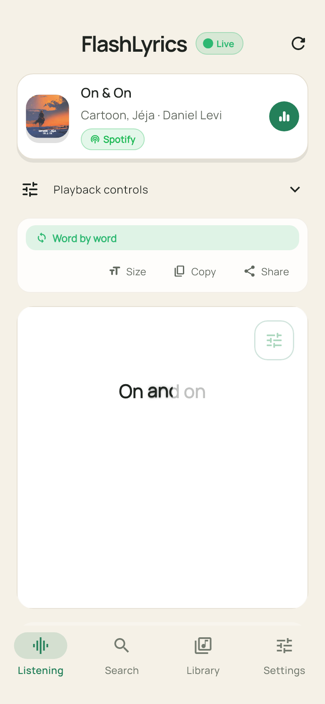
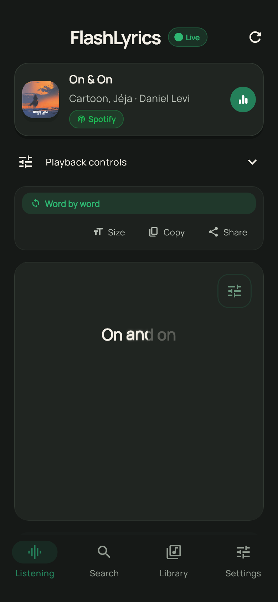
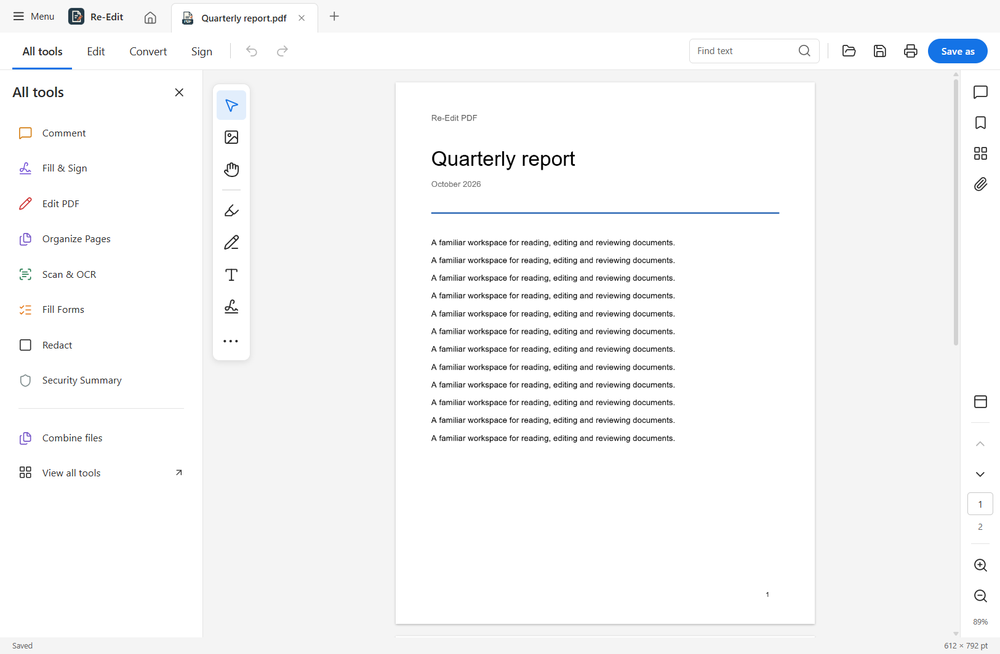

FLASHLYRICSANDROID APP


AVAILABLE ON GOOGLE PLAY
FlashLyrics
01Synced lyrics for the music already playing on your phone. Automatic track detection, a floating lyrics window, and an offline library.
AVANEESH KEDAR INAMDAR
I build desktop tools, mobile apps, and web platforms. I’m a Computer Science undergraduate at Walchand College of Engineering, with an interest in useful software and the engineering behind it.
Explore my work GitHubA few projects I’ve taken
from development to delivery.


Synced lyrics for the music already playing on your phone. Automatic track detection, a floating lyrics window, and an offline library.

A desktop PDF workspace for reading, editing, annotations, and offline OCR. Packaged for Windows and Linux with automated release workflows.
Browser testing from a URL. Generates and runs test cases, explains failures, and brings accessibility and performance reports into one place.
URL feature analysis and classification with three machine learning models.
Offline measurement of metal grain size from microstructure images.
Cross-platform anomaly detection for logs in air-gapped networks.
My projects span mobile development, desktop applications, browser automation, and computer vision. I like working across the stack and following a project through to a usable release.
Alongside engineering, I’m part of WCE’s Young CXO Fellowship, where I coordinate a batch of 15 fellows and learn from alumni founders and industry leaders.
Download full resumeB.Tech · Computer Science & Engineering
Built hotel management and wealth monitoring systems, covering billing, order tracking, deposits, and maturity dates in simulated business scenarios.
Competitions, research,
and learning with others.
At IIT Jammu, our team tackled an NTRO problem statement: portable log analysis and threat detection for air-gapped networks.
SMART INDIA HACKATHON · IIT JAMMUDeveloped a machine learning system to identify phishing links for the Maharashtra Police hackathon.
MAHARASHTRA POLICEUK design patent 6529823 granted for a data privacy monitoring device. Indian design application 202641115318 filed for a network intrusion detection system.
UK: GRANTED · INDIA: FILEDNPTEL Elite · Incubation & Entrepreneurship, IIT Madras (2025)
NPTEL Elite · Corporate Social Responsibility, IIT Kharagpur (2026)
For an internship, a project,
or a conversation about software.